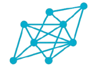

1
Document
Ingest and normalize data from any source.

Metagraph Request briefingPublic-sector data governance
Harmonize metadata, indicators, and data definitions across ministries, agencies, and local governments.
Live explanatory model
Current state
Source material enters a governed context before any comparison, mapping, or reasoning begins.

Trusted decision flow
A continuous flow that transforms institutional information into governed action.
Ingest and normalize data from any source.
Resolve entities and relationships in a governed knowledge graph.
AI agents analyze, correlate, and surface insights.
Humans review, decide, and take action.
Source files become reviewable input before reasoning begins.
Reference codes and sector tags are linked into one graph context.
Agents compare formats, columns, and metadata quality before escalation.
Coverage, source type, and confidence scores stay visible for review.
Human reviewers see the trace before approving any conclusion.
Why this matters
Definitions, indicators, and reporting rules remain split across documents and systems.
Teams compare data that looks aligned on paper but diverges in logic, units, or method.
Human review often arrives late, after institutions have already lost context and confidence.
System model

The graph keeps definitions, indicators, and institutional relationships connected in one reviewable structure.
Agents activate only to compare, surface conflict, and propose alignment paths, never to replace oversight.
When the decision point arrives, the system narrows attention to one accountable review moment.
Interface preview

Workflow

Normalize raw institutional data into harmonized structures with less manual prep.

Link spreadsheets, APIs, and operational systems into one governed ingestion layer.
Map datasets, indicators, and definitions into one connected review structure.

Run parallel checks to surface conflicts, alternatives, and evidence for human review.
Outcomes
Teams compare meaning earlier, before conflicting definitions harden into reporting friction.
Mixed audiences can see how governance, reasoning, and review fit together in one system.
Recommendations stay connected to evidence, relations, and the human authority that approves them.
Next step
For technical teams and institutional stakeholders evaluating harmonization, governance, and accountable review.
Start a conversation